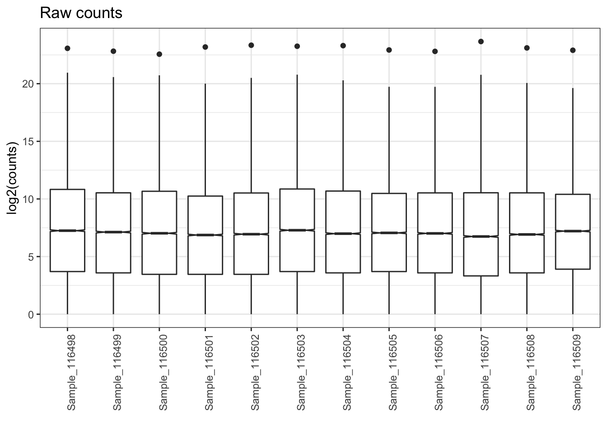
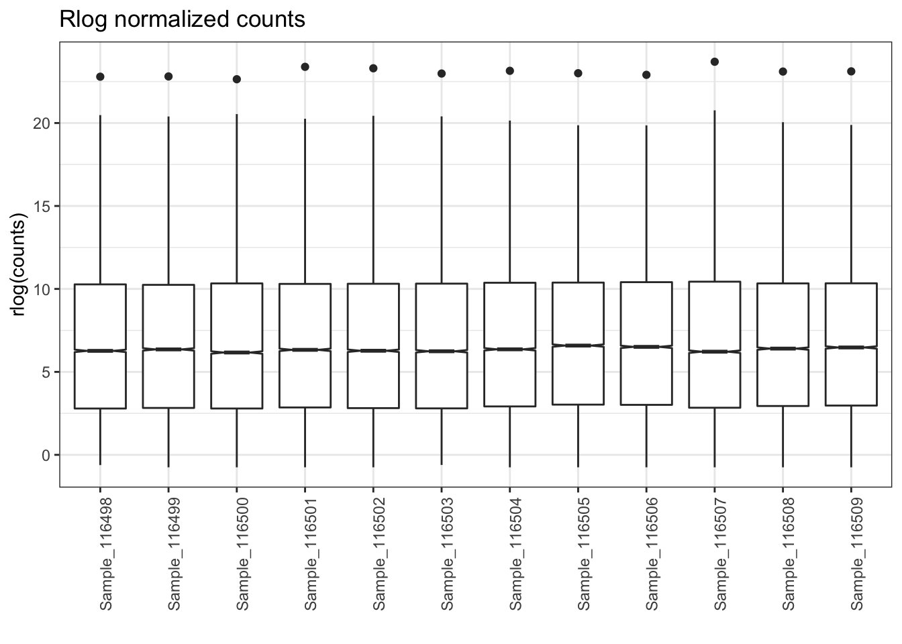

Objectives
- Additional visualizations for gene level QC assessment
To understand how skewed our raw data was and how well our normalization worked, we can look at distributions of raw and normalized counts. First, we need to set up some tables and labels.
## setup for raw counts
plotPath = "figures/"
pdata <- data.frame(colData(dds))
mat <- as.matrix(assay(dds))
title <- 'Raw counts'
y_label <- 'log2(counts)'
Comparison <- "ko.Tx"Then, we’ll add the relevant annotations to the count table.
# create annotationn table for raw plots
annot_df = data.frame(
sample = row.names(pdata),
row.names = row.names(pdata),
stringsAsFactors = F
)
# join counts and annotation table
tidy_mat = tidyr::gather(as_tibble(mat), key = 'sample', value = 'counts') %>%
left_join(annot_df, by = 'sample')Once we set up the input data, we can plot the raw counts for our samples.
box_plot = ggplot(tidy_mat, aes(x = sample, y = log2(counts))) +
geom_boxplot(notch = TRUE) +
labs(
title = title,
x = '',
y = y_label) +
theme_bw() + theme(axis.text.x = element_text(angle = 90))
box_plot
After generating the plot with ggplot, we can save it as a file in the directory we set up.
ggsave(filename = paste0(plotPath, "BoxPlot_Gtype.Tx_raw.pdf"), plot = box_plot, height = 8, width = 8, dpi = 300)To understand how the rlog normalization impacted the distributions of counts for each sample, we can plot boxplots for the normalized data and compare that to our plot of the raw data.
## rlog counts
pdata = data.frame(colData(rld))
mat = as.matrix(assay(rld))
title = 'Rlog normalized counts'
y_label = 'rlog(counts)'
annot_df = data.frame(
sample = row.names(pdata),
row.names = row.names(pdata),
stringsAsFactors = F
)
tidy_mat = tidyr::gather(as_tibble(mat), key = 'sample', value = 'counts') %>%
left_join(annot_df, by = 'sample')
box_plot = ggplot(tidy_mat, aes(x = sample, y = counts)) +
geom_boxplot(notch = TRUE) +
labs(
title = title,
x = '',
y = y_label) +
theme_bw() + theme(axis.text.x = element_text(angle = 90))
box_plot
ggsave(filename = paste0(plotPath, "BoxPlot_Gtype.Tx_rlog.pdf"), plot = box_plot, height = 8, width = 8, dpi = 300)To understand the patterns of expression across all our samples, including how well our samples cluster by group labels, we can generate a heatmaps.
The first heatmap to generate is of the top 500 expressed genes across all samples. First, we’ll set our color palette using a tool called Color Brewer.
#heatmap with top 500 variant or expressed genes, rlog normalized data
colors <- colorRampPalette(brewer.pal(9, 'Blues'))(255)First, we’ll select the top 500 expressed genes across all our samples to prioritize this set of genes and allow for patterns to be more easily ovbserved.
select <- order(rowMeans(assay(rld)), decreasing=TRUE)[1:500]
df <- data.frame(Group = colData(rld)[,c('Gtype.Tx')], row.names = rownames(colData(dds)))Next, we’ll set up a PDF file and plot our heatmap. Saving the plot as an object allows us to view the figure within our session as well as writing the plot to file.
The pheatmap function does quite a lot in a single step, including scaling the data by row and clustering both the samples (columns) and genes (rows).
Note: This blog post has a nice step by step overview of the pheatmap options, using basketball data as an example.
pdf(file = paste0(plotPath,'Heatmap_TopExp_', Comparison, '.pdf'), onefile = FALSE, width=10, height=20)
pheatmap(assay(rld)[select,], scale="row", cluster_rows=TRUE, show_rownames=FALSE, cluster_cols=TRUE, annotation_col=df, fontsize = 7, las = 2, fontsize_row = 7, color = colors, main = '500 Top Expressed Genes Heatmap')
dev.off()## pdf
## 3Looking at the heatmap, we see that samples within the same treatment group cluster together, fitting our understanding of the experimental design. We also see clusters of genes that appear to have contrasting patterns between the treatment groups, which is promising for our differential expression comparisons.
Note: Heatmaps are helpful visualizations, especially for sharing an overview of your RNA-seq data. The why and how of to use them properly can be confusing, such as outlined in the questions and answers in this biostars post that adds additional context to the overview in this workshop.
This blog post reviews the data transformation procedure for generating heatmaps and is a useful resource. They review the steps for generating a sample correlation heatmap similar to the plot generated below.
#heatmap of normalized data, sample distibution matrix
sampleDists <- dist(t(assay(rld))) #rld
sampleDistMatrix <- as.matrix(sampleDists) # convert to matrix
colnames(sampleDistMatrix) <- NULL
colors <- colorRampPalette(rev(brewer.pal(9, 'Blues')))(255)
pdf(file = paste0(plotPath,'Heatmap_Dispersions_', Comparison, '.pdf'), onefile = FALSE)
pheatmap(sampleDistMatrix,
clustering_distance_rows=sampleDists,
clustering_distance_cols=sampleDists,
col=colors)
dev.off()## pdf
## 3If we look at the sampleDists object, we now see from the diagonal values that there appears to be two major groups of samples, with better defined subgroups in the bottom right quadrant.
Overall, like the heatmap of the top 500 most expressed genes, we see that samples in the same treatment groups cluster well together when the full dataset is considered.
Another informative heatmap is for the top most variably expressed genes in the dataset. An example of this code is shown below.
colors <- colorRampPalette(brewer.pal(9, 'Blues'))(255)
select <- order(rowVars(assay(rld)), decreasing=TRUE)[1:500]
df <- data.frame(Group = colData(rld)[,c('Gtype.Tx')], row.names = rownames(colData(dds)))
pdf(file = paste0(plotPath,'Heatmap_TopVar_', Comparison, '.pdf'), onefile = FALSE, width=10, height=20)
pheatmap(assay(rld)[select,], scale="row", cluster_rows=TRUE, show_rownames=FALSE, cluster_cols=TRUE, annotation_col=df, fontsize = 7, las = 2, fontsize_row = 7, color = colors, main = '500 Top Variably Expressed Genes Heatmap')
dev.off()## pdf
## 3sessionInfo()## R version 4.1.1 (2021-08-10)
## Platform: x86_64-apple-darwin17.0 (64-bit)
## Running under: macOS Catalina 10.15.7
##
## Matrix products: default
## BLAS: /System/Library/Frameworks/Accelerate.framework/Versions/A/Frameworks/vecLib.framework/Versions/A/libBLAS.dylib
## LAPACK: /Library/Frameworks/R.framework/Versions/4.1/Resources/lib/libRlapack.dylib
##
## locale:
## [1] en_US.UTF-8/en_US.UTF-8/en_US.UTF-8/C/en_US.UTF-8/en_US.UTF-8
##
## attached base packages:
## [1] stats4 stats graphics grDevices utils datasets methods base
##
## other attached packages:
## [1] biomaRt_2.50.0 data.table_1.14.2 RColorBrewer_1.1-2
## [4] pheatmap_1.0.12 ggrepel_0.9.1 dplyr_1.0.7
## [7] tidyr_1.1.4 ggplot2_3.3.5 DESeq2_1.34.0
## [10] SummarizedExperiment_1.24.0 Biobase_2.54.0 MatrixGenerics_1.6.0
## [13] matrixStats_0.61.0 GenomicRanges_1.46.0 GenomeInfoDb_1.30.0
## [16] IRanges_2.28.0 S4Vectors_0.32.2 BiocGenerics_0.40.0
## [19] rmarkdown_2.11
##
## loaded via a namespace (and not attached):
## [1] bitops_1.0-7 bit64_4.0.5 filelock_1.0.2 progress_1.2.2
## [5] httr_1.4.2 tools_4.1.1 utf8_1.2.2 R6_2.5.1
## [9] DBI_1.1.1 colorspace_2.0-2 withr_2.4.2 tidyselect_1.1.1
## [13] prettyunits_1.1.1 bit_4.0.4 curl_4.3.2 compiler_4.1.1
## [17] xml2_1.3.2 DelayedArray_0.20.0 labeling_0.4.2 scales_1.1.1
## [21] genefilter_1.76.0 rappdirs_0.3.3 stringr_1.4.0 digest_0.6.28
## [25] XVector_0.34.0 pkgconfig_2.0.3 htmltools_0.5.2 dbplyr_2.1.1
## [29] fastmap_1.1.0 highr_0.9 rlang_0.4.11 RSQLite_2.2.8
## [33] jquerylib_0.1.4 generics_0.1.0 farver_2.1.0 BiocParallel_1.28.0
## [37] RCurl_1.98-1.5 magrittr_2.0.1 GenomeInfoDbData_1.2.7 Matrix_1.3-4
## [41] Rcpp_1.0.7 munsell_0.5.0 fansi_0.5.0 lifecycle_1.0.1
## [45] stringi_1.7.5 yaml_2.2.1 zlibbioc_1.40.0 BiocFileCache_2.2.0
## [49] grid_4.1.1 blob_1.2.2 parallel_4.1.1 crayon_1.4.1
## [53] lattice_0.20-44 Biostrings_2.62.0 splines_4.1.1 annotate_1.72.0
## [57] hms_1.1.1 KEGGREST_1.34.0 locfit_1.5-9.4 knitr_1.36
## [61] pillar_1.6.3 geneplotter_1.72.0 XML_3.99-0.8 glue_1.4.2
## [65] evaluate_0.14 png_0.1-7 vctrs_0.3.8 gtable_0.3.0
## [69] purrr_0.3.4 assertthat_0.2.1 cachem_1.0.6 xfun_0.26
## [73] xtable_1.8-4 survival_3.2-11 tibble_3.1.5 AnnotationDbi_1.56.2
## [77] memoise_2.0.0 ellipsis_0.3.2These materials have been adapted and extended from materials listed above. These are open access materials distributed under the terms of the Creative Commons Attribution license (CC BY 4.0), which permits unrestricted use, distribution, and reproduction in any medium, provided the original author and source are credited.